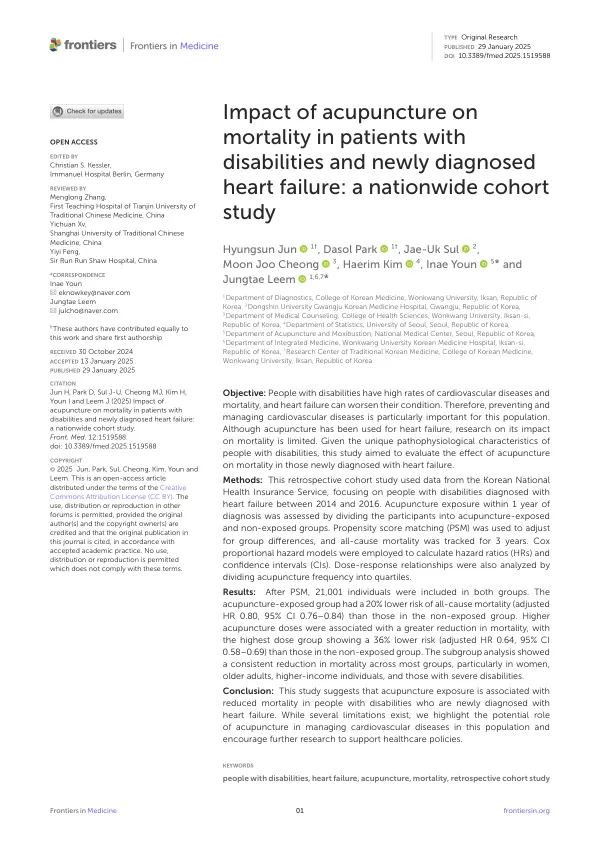

Impact of acupuncture on mortality in patients with disabilities and newly diagnosed heart failure: a nationwide cohort study
Jun H, Park D, Sul JU, Cheong MJ, Kim H, Youn I, Leem J
Frontiers in Medicine 12:1519588

첫 장 · 오픈액세스First page · open access
논문 소개Summary
장애인은 심혈관질환 유병률과 사망률이 모두 높습니다. 고혈압·당뇨·고지혈증·비만 같은 위험요인을 더 많이 안고 있고, 심부전이 겹치면 상태가 빠르게 나빠집니다. 그런데 정작 장애인을 대상으로 한 연구는 매우 적어 비장애인과의 근거 격차가 큽니다. 이 연구는 그 격차를 좁히려고 장애인 심부전 환자에서 침 치료와 사망의 관계를 살폈습니다.
국민건강보험공단의 장애인 자료 250만 명분을 이용해 2014~2016년에 심부전을 처음 진단받은 장애인을 대상으로 했습니다. 진단 후 1년 안에 침을 2회 이상 받았는지로 노출을 나누고, 두 군의 차이를 성향점수 매칭으로 맞춰 각각 21,001명을 확보한 뒤 3년간 전체 사망을 추적했습니다. 침 치료 횟수를 사분위로 나누어 용량-반응 관계도 함께 보았습니다.
침을 받은 군의 전체 사망 위험은 20% 낮았습니다(보정 위험비 0.80, 95% 신뢰구간 0.76–0.84). 1,000인년당 사망은 67.90건에서 53.07건으로 줄었습니다. 많이 받을수록 낮아져, 19회 이상 받은 최상위군은 36% 낮았습니다(0.64, 0.58–0.69). 하위군 분석에서도 대부분 일관되게 낮았고 특히 여성, 고령, 고소득, 중증장애에서 뚜렷했습니다. 250만 명 규모 자료로 장애인 심부전에서 침 치료를 평가한 것은 이 연구가 처음입니다.
한계는 다음과 같습니다. 진단 후 1년을 살아남은 사람만 분석에 넣었기 때문에 더 중한 환자가 빠졌을 수 있습니다. 이는 급성기 치료 효과가 결과를 왜곡하는 것을 막으려는 설계였지만, 중증 환자에 대해서는 따로 답이 필요합니다. 장애 중증도로 나누기는 했으나 그것이 신체활동량을 그대로 반영하지는 않고, 건강보험 자료에는 활동량을 재는 항목이 없습니다. 장애 유형(감각·지체·정신)별 분석도 하지 못했습니다. 심장 기능이나 예후를 직접 보여주는 혈역학 지표·혈액 검사도 볼 수 없었습니다. 그럼에도 이 결과는 장애인의 심혈관질환 관리에서 침 치료가 맡을 수 있는 자리를 처음으로 가리키며, 관련 보건정책 연구가 이어질 근거가 됩니다.
People with disabilities have higher rates of both cardiovascular disease and mortality. They carry more risk factors — hypertension, diabetes, dyslipidemia, obesity — and heart failure on top of these can deteriorate quickly. Yet research in this population is scarce, leaving a substantial evidence gap relative to non-disabled populations. This study addressed that gap by examining acupuncture exposure and mortality among people with disabilities newly diagnosed with heart failure.
Using National Health Insurance Service data covering 2.5 million people with disabilities, we identified those newly diagnosed with heart failure between 2014 and 2016. Exposure was defined as two or more acupuncture sessions within one year of diagnosis; propensity score matching yielded 21,001 patients in each group, followed for three years for all-cause mortality. Acupuncture frequency was also divided into quartiles to test for a dose-response relationship.
The acupuncture group had a 20% lower risk of all-cause mortality (adjusted HR 0.80, 95% CI 0.76–0.84), with mortality falling from 67.90 to 53.07 per 1,000 person-years. Risk decreased further with more sessions: the highest quartile (19 or more) showed a 36% reduction (0.64, 0.58–0.69). Subgroup analyses were consistent, with the association most evident among women, older adults, higher-income patients and those with severe disabilities. This is the first study to evaluate acupuncture for heart failure in people with disabilities using a dataset of this scale.
Several limitations apply. Only patients surviving one year past diagnosis were analysed, so more severely ill patients may have been omitted; this design avoided distortion from acute-phase treatment effects, but severe cases require a separate answer. Disability severity was stratified but does not directly reflect physical activity, and the insurance data contain no measure of activity level. Analysis by disability type (sensory, physical, neuropsychiatric) was not possible, and no haemodynamic or laboratory markers of cardiac function and prognosis were available. Even so, these findings point for the first time to a possible role for acupuncture in cardiovascular management for people with disabilities, and provide a basis for follow-up health policy research.
인용Cite
Jun H, Park D, Sul JU, Cheong MJ, Kim H, Youn I, Leem J. Impact of acupuncture on mortality in patients with disabilities and newly diagnosed heart failure: a nationwide cohort study. Frontiers in Medicine. 2025;12:1519588. doi:10.3389/fmed.2025.1519588